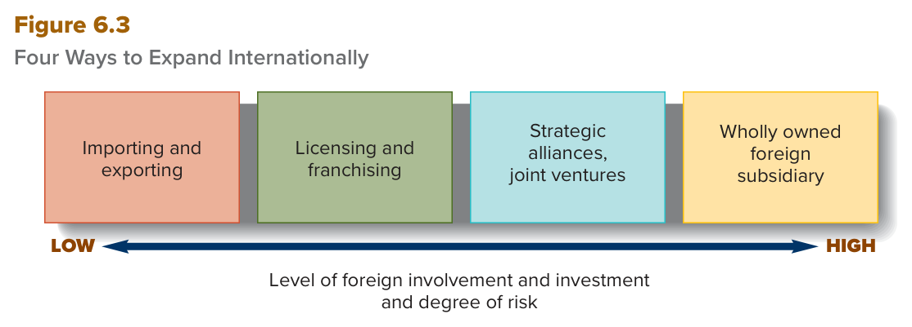

MGT 102 · Chapter 6 · القسم ٣ من ٤:
The Changing Global Environment
الهدف LO6-4: Explain why the global environment is becoming more open and competitive, and identify the forces behind the process of globalization that increase the opportunities, complexities, challenges, and threats managers face.
الهدف LO6-5: Discuss why national cultures differ and why it is important that managers be sensitive to the effects of falling trade barriers and regional trade associations on the political and social systems of nations around the world.
الدرسين اللي قبل وصفوا لك البيئة: task environment وgeneral environment. هنا الكتاب يسأل سؤال أكبر:
ليش البيئة العالمية صارت مفتوحة وتنافسية أكثر؟ الجواب: العولمة (globalization) واللي يحرّكها
= رأس المال (capital) بأشكاله الأربعة (LO6-4). بعدها يعلّمك كيف الشركة تتوسّع دولياً:
استراتيجيتين (global ضد multidomestic) وأربع طرق مرتّبة على سلّم واحد في Figure 6.3.
وآخر شي: الحواجز اللي طاحت — حواجز التجارة والاستثمار (tariff، GATT، WTO) وحواجز
المسافة والثقافة — ووش سوّت التجارة الحرة والاتفاقيات الإقليمية (NAFTA ← USMCA) بالمدير (LO6-5).
ركّز من الحين على خمس أشياء تطيّح الطلاب هنا: (١) أسماء رأس المال الأربعة بالإنجليزي، (٢) ترتيب الطرق الأربع في Figure 6.3 من LOW لـHIGH، (٣) licensing (تصنيع + رسم) ضد franchising (خدمات + مبلغ مقطوع وحصة أرباح)، (٤) strategic alliance ضد joint venture ضد wholly owned foreign subsidiary، (٥) tariff ضد free-trade doctrine، وإن GATT انحلّت وجات مكانها WTO. والتعاريف الإنجليزية خذها حرفية من صناديق EXAM BOX.
خطة القسم زي ما يعلنها الكتاب (وهي نفسها ترتيب المفاهيم في هالدرس):
الكتاب يقول: يمكن أهم سبب إن البيئة العالمية صارت مفتوحة وتنافسية أكثر هو زيادة العولمة.
| المصطلح | التعريف بالإنجليزي (احفظه حرفي) | بالعربي |
|---|---|---|
| Globalization العولمة |
The set of specific and general forces that work together to integrate and connect economic, political, and social systems across countries, cultures, or geographic regions so that nations become increasingly interdependent and similar. | مجموعة القوى الخاصة والعامة اللي تشتغل مع بعض عشان تدمج وتربط الأنظمة الاقتصادية والسياسية والاجتماعية عبر الدول أو الثقافات أو المناطق الجغرافية، لين الدول تصير مترابطة ومتشابهة أكثر وأكثر. |
الكتاب يسأل: وش يخلّي شركات زي IKEA وToyota وMicrosoft تبي تدخل بيئة عالمية مو مضمونة؟ الجواب: طريق العولمة يتشكّل بـمدّ وجزر رأس المال (the ebb and flow of capital). وcapital عند الكتاب = أصول أو موارد قيّمة تولّد ثروة، الناس ينقلونها بين الشركات والدول ومناطق العالم يدوّرون فيها أعلى عائد أو ربح. والمدراء والموظفين وشركات زي Hyundai وSamsung متحفّزين يربحون باستخدام مهاراتهم عشان يصنعون منتجات يبيها زبائن العالم.
| # | النوع | وش اللي يتدفّق؟ | بأي طريقة / أمثلة (كلمات الكتاب) |
|---|---|---|---|
| ١ | Human capital رأس المال البشري |
الناس حول العالم | immigration, migration, and emigration — الهجرة للبلد، التنقّل، والهجرة منه |
| ٢ | Financial capital رأس المال المالي |
الفلوس (money capital) عبر أسواق العالم | overseas investment, credit, lending, and aid — استثمار برّا، ائتمان، إقراض، ومساعدات |
| ٣ | Resource capital رأس مال الموارد |
الموارد الطبيعية والقطع والمكوّنات بين الشركات والدول | metals, minerals, lumber, energy, food products, microprocessors, and auto parts — معادن، خامات، أخشاب، طاقة، أغذية، معالجات، قطع سيارات |
| ٤ | Political capital رأس المال السياسي |
القوة والنفوذ حول العالم | diplomacy, persuasion, aggression, and force of arms — دبلوماسية، إقناع، عدوان، وقوة سلاح — هدفه يحمي حق دولة أو منطقة أو كتلة سياسية في الوصول لأشكال رأس المال الثانية |
أغلب التقدّم الاقتصادي المرتبط بالعولمة نتيجة هالتدفّقات الأربعة والتفاعل بينها، والدول تتنافس على المسرح العالمي عشان تحمي وترفع مستوى معيشتها وتخدم الأهداف السياسية والقضايا الاجتماعية اللي تتبنّاها ثقافة مجتمعاتها.
| وش يقول الكتاب | |
|---|---|
| الوجه الإيجابي In a positive sense |
كل ما كان التدفّق أسرع، رأس المال يستخدم وين يخلق أكبر قيمة: ناس ينتقلون للمكان اللي مهاراتهم تكسب فيه أكثر، مستثمرين يتحوّلون للأسهم أو السندات اللي تعطي أرباح أو فوائد أعلى، وشركات تلقى مصادر مدخلات أرخص. |
| الوجه السلبي In a negative sense |
التدفّق السريع يعني بعد إن دولة أو منطقة ممكن تلقى نفسها في ورطة لما الشركات والمستثمرين ينقلون رأس مالهم لدول ثانية — غالباً اللي فيها تكاليف عمالة أقل أو أسواق تكبر بسرعة. |
ولما رأس المال يطلع من دولة، النتايج ثلاث (احفظها): (١) بطالة أعلى higher unemployment، (٢) ركود recession، (٣) مستوى معيشة أقل لشعبها a lower standard of living.
Perhaps the most important reason the global environment has become more open and competitive is the increase in globalization. Globalization is the set of specific and general forces that work together to integrate and connect economic, political, and social systems across countries, cultures, or geographic regions. The result of globalization is that nations and peoples become increasingly interdependent because the same forces affect them in similar ways.
The path of globalization is shaped by the ebb and flow of capital—valuable wealth-generating assets or resources that people move through companies, countries, and world regions to seek their greatest returns or profits.
The four principal forms of capital that flow between countries are these: Human capital: the flow of people around the world through immigration, migration, and emigration. Financial capital: the flow of money capital across world markets through overseas investment, credit, lending, and aid. Resource capital: the flow of natural resources, parts, and components between companies and countries, such as metals, minerals, lumber, energy, food products, microprocessors, and auto parts. Political capital: the flow of power and influence around the world using diplomacy, persuasion, aggression, and force of arms to protect the right or access of a country, world region, or political bloc to the other forms of capital.
When capital leaves a country, the results are higher unemployment, recession, and a lower standard of living for its people.
زي ما التخطيط لـvertical integration أو diversification أو التركيز على النشاط الأساسي مهمة صعبة، مدراء مستوى الشركة (corporate-level managers) لازم كمان يقرّرون الطريقة المناسبة للمنافسة دولياً. والسؤال اللي يواجه أي منظمة تبيع برّا وتتنافس في أكثر من سوق وطني:
To what extent should the organization customize features of its products and marketing campaign to different national conditions?
يعني: لأي درجة لازم المنظمة تفصّل خصائص منتجاتها وحملتها التسويقية على ظروف كل دولة؟
| المصطلح | التعريف بالإنجليزي (احفظه حرفي) | بالعربي |
|---|---|---|
| Global strategy الاستراتيجية العالمية |
Selling the same standardized product and using the same basic marketing approach in each national market. | تبيع نفس المنتج الموحّد وتستخدم نفس الأسلوب التسويقي الأساسي في كل سوق وطني. الشركة هنا تسوي تفصيل قليل أو ما تسوي أبداً (little, if any, customization). |
| Multidomestic strategy الاستراتيجية متعدّدة المحلية |
Customizing products and marketing strategies to specific national conditions. | تفصّل المنتجات والاستراتيجيات التسويقية على ظروف كل دولة بعينها. |
| Global strategy | Multidomestic strategy | |
|---|---|---|
| مثال الكتاب | Panasonic: تبيع نفس التلفزيونات والكاميرات ومشغّلات DVD وMP3 الأساسية في كل دولة، وغالباً بنفس الأسلوب التسويقي. | Unilever (شركة أوروبية للأغذية والمنتجات المنزلية): قسمها الألماني يبيع تشكيلة أغذية مختلفة وبـتسويق مختلف عن قسم أمريكا الشمالية، عشان يجذب الزبون الألماني. |
| الميزة الرئيسية | توفير كبير في التكاليف لأنك ما تفصّل المنتج والتسويق على كل دولة. | بالتفصيل على الظروف المحلية، المدير ممكن ياخذ حصة سوقية أو يطلب أسعار أعلى. |
| العيب الرئيسي | لأنك تتجاهل الفروق الوطنية، تصير مكشوف للمنافسين المحليين اللي يميّزون منتجاتهم على الذوق المحلي. | التفصيل يرفع تكاليف الإنتاج ويحطّ الشركة في عيب سعري (price disadvantage)، لأنها غالباً تضطر تطلب أسعار أعلى من المنافسين اللي ماشين global. |
| مين يناسبه | منتجات تنباع بنفس التسويق بس بتغيير اللغة: ساعات Rolex، ملابس Ralph Lauren أو Tommy Hilfiger، ملابس وإكسسوارات وعطور Chanel أو Armani، كمبيوترات Apple، ألعاب بلاستيك صينية الصنع، والرز والقمح الأمريكي. والمنظمات اللي تخدم زبائن أعمال (business customers) غالباً تختارها لأن احتياجاتهم (جودة أحسن وتكلفة أقل) ثابتة من مكان لمكان. | الكتاب ما يعطي قائمة هنا؛ أمثلته كلها من الأغذية (قسم Unilever الألماني، ودرس Kellogg's وNestlé في الهند) — أسواق ذوقها المحلي يفرق. |
الكتاب يقول حرفياً: مزايا وعيوب multidomestic عكس مزايا وعيوب global، والاختيار بينهم يحتاج مقايضات (trade-offs).
مثال فشل التجاهل — الهند: صنّاع الأغذية العالميين Kellogg's وNestlé دخلوا سوق الأغذية المصنّعة الهندي (قيمته أكثر من ٣٠٠ مليار دولار في السنة) وما عرفوا يفصّلون منتجاتهم على الذوق الهندي، فخسروا خساير كبيرة في البداية. Kellogg's ما انتبهت إن أغلب الهنود ياكلون فطور مطبوخ لأن الحليب عادةً مو مبستر؛ واليوم مع انتشار الحليب المبستر والمعلّب تقدّم حبوب من رز البسمتي بنكهة المانجو. وMaggi من Nestlé ما عجبت الهنود لين صارت بنكهة “marsala” (خلطة كاري)، واليوم صارت أساسية في أكلهم.
الكتاب يقول التوسّع برّا ممكن يكون نجاح ضخم، بس حتى طفرة الطلب ممكن تصير مشكلة إدارية:
وصورة الكتاب في نفس الصفحة: رغم الرياح المعاكسة، توقّعات اقتصاد أفريقيا إيجابية بنمو متوقّع فوق ٣٪، مع تحدّيات اقتصادية وسياسية واجتماعية وبيئية والعولمة تسرّع التغيير في مدن زي Lagos, Nigeria.
To what extent should the organization customize features of its products and marketing campaign to different national conditions?
If managers decide that their organization should sell the same standardized product in each national market in which it competes, and use the same basic marketing approach, they adopt a global strategy. But if managers decide to customize products and marketing strategies to specific national conditions, they adopt a multidomestic strategy. Panasonic has traditionally pursued a global strategy, selling the same basic TVs, camcorders, and DVD and MP3 players in every country in which it does business and often using the same basic marketing approach. Unilever, the European food and household products company, has pursued a multidomestic strategy. Thus, to appeal to German customers, Unilever's German division sells a different range of food products and uses a different marketing approach than its North American division.
The major advantage of a global strategy is the significant cost savings associated with not having to customize products and marketing approaches to different national conditions. Organizations that serve business customers often adopt a global strategy because customer needs such as improving quality and lowering costs are consistent from place to place.
The major disadvantage of pursuing a global strategy is that by ignoring national differences, managers may leave themselves vulnerable to local competitors that differentiate their products to suit local tastes.
The major advantage of a multidomestic strategy is that by customizing product offerings and marketing approaches to local conditions, managers may be able to gain market share or charge higher prices for their products. The major disadvantage is that customization raises production costs and puts the multidomestic company at a price disadvantage because it often has to charge prices higher than the prices charged by competitors pursuing a global strategy.
| وش يقول الكتاب عن البيئة العالمية التنافسية | |
|---|---|
| الفرصة | المنظمة اللي تتوسّع عالمياً تقدر تفتح أسواق جديدة، وتوصل لزبائن أكثر، وتوصل لـمصادر مواد خام جديدة وموردين مدخلات رخيصين. |
| التهديد | غالباً بتقابل منافسين جدد في الدول اللي تدخلها، ولازم ترد على ظروف سياسية واقتصادية وثقافية جديدة. |
عشان كذا، قبل ما تأسّس عمليات برّا، مدراء شركات زي Amazon وLands' End وGE وP&G وBoeing احتاجوا يحلّلون القوى في بيئة دولة معيّنة (زي كوريا أو البرازيل) عشان يختارون الطريقة الصح للتوسّع. والطرق أربع، والكتاب يمشي فيها من أقل تورّط واستثمار أجنبي وأقل مخاطرة لأعلى طرف:
| الدرجة | الطريقة | بالعربي | التورّط والاستثمار والمخاطرة |
|---|---|---|---|
| ١ | Exporting and importing | التصدير والاستيراد | الأقل — the least complex global operations |
| ٢ | Licensing and franchising | الترخيص والامتياز | أعلى شوي — الشريك الأجنبي يتحمّل تكاليف التطوير |
| ٣ | Strategic alliances, joint ventures | التحالفات الاستراتيجية والمشاريع المشتركة | أعلى — تتشارك الموارد والمكافآت والمخاطر |
| ٤ | Wholly owned foreign subsidiary | الشركة التابعة الأجنبية المملوكة بالكامل | الأعلى — much more expensive than the others |

هذا Figure 6.3 في الكتاب (ص ١٦٩)، وهو أهم شكل في الفصل. فيه أربع صناديق في صف واحد، وتحتها سهم برأسين: طرفه اليسار مكتوب LOW وطرفه اليمين مكتوب HIGH، وتحت السهم اسم المحور: Level of foreign involvement and investment and degree of risk (مستوى التورّط والاستثمار الأجنبي ودرجة المخاطرة). كيف تقرأه: الشكل إنجليزي، فاقرأه من اليسار لليمين — مو من اليمين زي العربي! الترتيب: Importing and exporting ← Licensing and franchising ← Strategic alliances, joint ventures ← Wholly owned foreign subsidiary. لاحظ إن الشكل كاتب Importing and exporting والمتن يقول exporting and importing — نفس الشي، والصندوق الثالث يجمع التحالفات والمشاريع المشتركة مع بعض. والسهم واحد للثلاثة: التورّط والاستثمار والمخاطرة يزيدون مع بعض. وش يجي منه بالاختبار: «رتّب الطرق من LOW لـHIGH»، «أي طريقة فيها أعلى استثمار ومخاطرة؟» (wholly owned foreign subsidiary)، «أي طريقة أقل؟» (importing and exporting)، أو سيناريو وتحدّد مكانه على السلّم. والفخ: لو قريته من اليمين بتطلع لك الإجابة المعكوسة.
| المصطلح | التعريف بالإنجليزي (احفظه حرفي) | بالعربي |
|---|---|---|
| Exporting التصدير |
Making products at home and selling them abroad. | تصنع في بلدك وتبيع برّا. |
| Importing الاستيراد |
Selling products at home that are made abroad. | تبيع في بلدك منتجات مصنوعة برّا (سواء صنعتها أنت أو اشتريتها من شركات ثانية). |
| المصطلح | التعريف بالإنجليزي (احفظه حرفي) | بالعربي |
|---|---|---|
| Licensing الترخيص |
Allowing a foreign organization to take charge of manufacturing and distributing a product in its country or world region in return for a negotiated fee. | تسمح لمنظمة أجنبية تتولّى تصنيع وتوزيع منتجك في بلدها أو منطقتها مقابل رسم متفاوَض عليه. |
| Franchising الامتياز التجاري |
Selling to a foreign organization the rights to use a brand name and operating know-how in return for a lump-sum payment and a share of the profits. | تبيع لمنظمة أجنبية حق استخدام اسمك التجاري ومعرفتك التشغيلية مقابل مبلغ مقطوع + حصة من الأرباح. |
| Licensing | Franchising | |
|---|---|---|
| مين يستخدمه أساساً | شركات التصنيع (manufacturing companies) | منظمات الخدمات (service organizations) |
| اللي يعطي / اللي ياخذ | licenser (الشركة الأم) ← licensee (الأجنبي) | franchisor / franchiser (الشركة الأم) ← franchisee (الأجنبي) |
| وش ينعطى | تصنيع وتوزيع منتج أو أكثر في بلد الـlicensee | حق استخدام الاسم التجاري والمعرفة التشغيلية |
| المقابل | رسم متفاوَض عليه negotiated fee | مبلغ مقطوع + حصة من الأرباح lump-sum payment and share of profits |
| مثال الكتاب | DuPont (كيماويات) ترخّص مصنع محلي في الهند ينتج nylon أو Teflon | Hilton Hotels تبيع امتياز لشركة محلية في تشيلي تشغّل فنادق باسم Hilton |
| الميزة | المرخِّص ما يتحمّل تكاليف التطوير للافتتاح برّا — الـlicensee يتحمّلها | المانح ما يتحمّل تكاليف التطوير ويتجنّب مشاكل كثيرة في تأسيس عمليات برّا |
| الخطر | يعطي الشريك وصول لـمعرفته التقنية (technological know-how) ← يخاطر يفقد السيطرة على أسراره | يفقد السيطرة على طريقة تشغيل الـfranchisee والجودة ممكن تنزل ← يخاطر بـسمعته |
مثال السمعة: Hilton وAvis وMcDonald's يخاطرون باسمهم الطيب. الأمريكي اللي ياكل برغر McDonald's في كوريا يتوقّع يكون بنفس جودة اللي في بلده، ولو ما كان كذا سمعة McDonald's تتضرّر مع الوقت. وهنا بعد الإنترنت يسهّل التواصل بين الشركاء عشان كل واحد يلبّي توقّعات الثاني.
In general, four basic ways to operate in the global environment are exporting and importing, licensing and franchising, strategic alliances, and wholly owned foreign subsidiaries. We briefly discuss each one, moving from the lowest level of foreign involvement and investment required of a global organization and its managers, and the least amount of risk, to the high end of the spectrum (see Figure 6.3).
The least complex global operations are exporting and importing. A company engaged in exporting makes products at home and sells them abroad. Few risks are associated with exporting because a company does not have to invest in developing manufacturing facilities abroad. A company engaged in importing sells products at home that are made abroad (products it makes itself or buys from other companies).
In licensing, a company (the licenser) allows a foreign organization (the licensee) to take charge of both manufacturing and distributing one or more of its products in the licensee's country or world region in return for a negotiated fee. The advantage of licensing is that the licenser does not have to bear the development costs associated with opening up in a foreign country; the licensee bears the costs. The risks associated with this strategy are that the company granting the license has to give its foreign partner access to its technological know-how and so risks losing control of its secrets.
Whereas licensing is pursued primarily by manufacturing companies, franchising is pursued primarily by service organizations. In franchising, a company (the franchisor) sells to a foreign organization (the franchisee) the rights to use its brand name and operating know-how in return for a lump-sum payment and share of the franchiser's profits. The advantage of franchising is that the franchiser does not have to bear the development costs of overseas expansion and avoids the many problems associated with setting up foreign operations. The downside is that the organization that grants the franchise may lose control over how the franchisee operates, and product quality may fall.
| المصطلح | التعريف بالإنجليزي (احفظه حرفي) | بالعربي |
|---|---|---|
| Strategic alliance التحالف الاستراتيجي |
An agreement in which managers pool or share their organization's resources and know-how with a foreign company, and the two organizations share the rewards and risks of starting a new venture. | اتفاق يجمع فيه المدراء أو يتشاركون موارد ومعرفة منظمتهم مع شركة أجنبية، والمنظمتين يتقاسمون المكافآت والمخاطر لبدء مشروع جديد. |
| Joint venture المشروع المشترك |
A strategic alliance among two or more companies that agree to jointly establish and share the ownership of a new business. | تحالف استراتيجي بين شركتين أو أكثر يتّفقون يأسّسون مع بعض عمل جديد ويتقاسمون ملكيته. |
مثال General Mills (احفظ الأرقام): عندها مشروعين مشتركين دوليين: (١) Cereal Partners Worldwide (CPW) = مشروع ٥٠-٥٠ مع Nestlé يسوّق حبوب الإفطار في أكثر من ١٣٠ دولة، يجمع خبرة General Mills (ثاني أكبر مصنّع حبوب في أمريكا الشمالية) مع انتشار Nestlé العالمي وقوّة توزيعها. (٢) Häagen-Dazs Japan. وفي السنة المالية ٢٠٢٢ المشروعين جابوا لـGeneral Mills مبيعات أكثر من ٢٫١ مليار دولار.
| المصطلح | التعريف بالإنجليزي (احفظه حرفي) | بالعربي |
|---|---|---|
| Wholly owned foreign subsidiary الشركة التابعة المملوكة بالكامل |
Production operations established in a foreign country independent of any local direct involvement. | عمليات إنتاج تتأسّس في دولة أجنبية مستقلة عن أي مشاركة محلية مباشرة. |
انتبه لتناقض ظاهري: الكتاب يقول هالطريقة فيها «many more threats» وبنفس الوقت «reduces the level of risk». الفرق (تفسيرنا): التهديدات أكبر لأنك حاط استثمار ضخم لحالك في بيئة أجنبية، بس خطر فقدان السيطرة وتسريب التقنية أقل لأن السيطرة كاملة. وفي سؤال الترتيب اعتمد Figure 6.3: هي أعلى درجة في التورّط والاستثمار والمخاطرة.
| الطريقة | مين يتحمّل التكاليف والاستثمار | السيطرة | الخطر الأساسي |
|---|---|---|---|
| Exporting / importing | استثمار قليل — ما فيه مصانع برّا | ضعيفة — الكتاب يذكر loss-of-control problems فيها | مخاطر قليلة |
| Licensing / franchising | الـlicensee/franchisee | ضعيفة | الأسرار التقنية / الجودة والسمعة |
| Strategic alliance / joint venture | مقسومة بين الشركاء | أكبر من الترخيص والامتياز | المكافآت والمخاطر مقسومة |
| Wholly owned foreign subsidiary | كلها عليك — الأغلى | كاملة | كل المخاطر عليك + تهديدات أكثر |
One way to overcome the loss-of-control problems associated with exporting, licensing, and franchising is to expand globally by means of a strategic alliance. In a strategic alliance, managers pool or share their organization's resources and know-how with those of a foreign company, and the two organizations share the rewards or risks of starting a new venture in a foreign country.
A joint venture is a strategic alliance between two or more companies that agree to jointly establish and share the ownership of a new business. An organization's level of involvement abroad increases in a joint venture because the alliance normally involves a capital investment in production facilities abroad in order to produce goods or services outside the home country. Risk, however, is reduced.
When managers decide to establish a wholly owned foreign subsidiary, they invest in establishing production operations in a foreign country independent of any local direct involvement.
Operating alone, without any direct involvement from foreign companies, an organization receives all of the rewards and bears all of the risks associated with operating abroad. This method of international expansion is much more expensive than the others because it requires a higher level of foreign investment and presents managers with many more threats. However, investment in a foreign subsidiary or division offers significant advantages: It gives an organization high potential returns because the organization does not have to share its profits with a foreign organization, and it reduces the level of risk because the organization's managers have full control over all aspects of their foreign subsidiary's operations. Moreover, this type of investment allows managers to protect their technology and know-how from foreign organizations. Large, well-known companies like DuPont, GM, and P&G, which have plenty of resources, make extensive use of wholly owned subsidiaries.
من أهم العوامل اللي سرّعت العولمة بتحرير حركة رأس المال = تراجع حواجز التجارة والاستثمار. في العشرينات والثلاثينات دول كثيرة بنت حواجز ضخمة قدّام التجارة والاستثمار الدولي، يحسبون إنها أحسن طريقة لرفاههم الاقتصادي، وأغلبها كانت رسوم عالية على استيراد السلع المصنّعة.
| المصطلح | التعريف بالإنجليزي (احفظه حرفي) | بالعربي |
|---|---|---|
| Tariff التعرفة / الرسوم الجمركية |
A tax that a government imposes on imported or, occasionally, exported goods. | ضريبة تفرضها الحكومة على البضاعة المستوردة — وأحياناً المصدَّرة. (والمتن يعرّفها: ضريبة على بضاعة مستوردة لدولة من دولة ثانية.) |
بعد الحرب العالمية الثانية، الدول الصناعية الغربية المتقدّمة — بعد درس الكساد الكبير — التزمت بإزالة الحواجز قدّام التدفّق الحر للموارد ورأس المال بين الدول. وتعزّز هالالتزام بقبول مبدأ إن التجارة الحرة (free trade) — مو الحواجز الجمركية — هي أحسن طريقة لاقتصاد محلي صحّي وبطالة منخفضة.
| المصطلح | التعريف بالإنجليزي (احفظه حرفي) | بالعربي |
|---|---|---|
| Free-trade doctrine مذهب التجارة الحرة |
The idea that if each country specializes in the production of the goods and services that it can produce most efficiently, this will make the best use of global resources. | الفكرة إن كل دولة لو تخصّصت في إنتاج البضائع والخدمات اللي تنتجها بأعلى كفاءة، هذا يحقّق أحسن استخدام لموارد العالم — والمتن يزيد: وأسعار أقل (lower prices). |
| المعلومة | التفاصيل (احفظ التسلسل) |
|---|---|
| GATT | General Agreement on Tariffs and Trade — معاهدة دولية هدفها إزالة الحواجز قدّام التدفّق الحر للبضائع والخدمات ورأس المال. صار لها جولات مفاوضات كثيرة بعد الحرب العالمية الثانية لخفض الرسوم. |
| Uruguay Round | شملت ١١٧ دولة ونجحت تخفّض الرسوم أكثر من ٣٠٪ عن مستواها السابق، وأدّت لحلّ GATT واستبدالها بـWTO. |
| WTO | World Trade Organization — تكمّل الكفاح لخفض الرسوم، وعندها سلطة أكبر تعاقب الدول اللي تكسر الاتفاقيات العالمية. |
| Doha Round | آخر جولة — انتهت فعلياً في ٢٠١٥ لما وزراء التجارة فشلوا يتّفقون يبقّون المفاوضات حيّة. والسبب: دول رئيسية (أمريكا، الصين، الهند، أعضاء الاتحاد الأوروبي) ما كانوا راضين أو قادرين يقدّمون تنازلات جوهرية. |
A tariff is a tax that a government imposes on goods imported into one country from another. The aim of import tariffs is to protect domestic industries and jobs, such as those in the auto or steel industry, from overseas competition by raising the price of these products from abroad.
The reason for removing tariffs is that, very often, when one country imposes an import tariff, others follow suit, and the result is a series of retaliatory moves as countries progressively raise tariff barriers against each other. Governments of countries that resort to raising tariff barriers ultimately reduce employment and undermine the economic growth of their countries because capital and resources will always move to their most highly valued use—wherever that is in the world.
The free-trade doctrine predicts that if each country agrees to specialize in the production of the goods and services that it can produce most efficiently, this will make the best use of global capital resources and will result in lower prices. For example, if Indian companies are highly efficient in the production of textiles and U.S. companies are highly efficient in the production of computer software, then, under a free-trade agreement, capital would move to India and be invested there to produce textiles, while capital from around the world would flow to the United States and be invested in its innovative software companies.
Historically, countries that accepted this free-trade doctrine set as their goal the removal of barriers to the free flow of goods, services, and capital between countries. They tried to achieve this through an international treaty known as the General Agreement on Tariffs and Trade (GATT). For example, the Uruguay Round involved 117 countries and succeeded in lowering tariffs by more than 30% from the previous level. It also led to the dissolution of GATT and its replacement by the World Trade Organization (WTO), which continues the struggle to reduce tariffs and has more power to sanction countries that break global agreements. The latest round of negotiations, called the Doha Round, effectively ended in 2015, when trade ministers failed to agree to keep the negotiations and discussions alive.
تاريخياً، حواجز المسافة والثقافة قفلت البيئة العالمية وخلّت المدراء يركّزون على سوقهم المحلي. وUnilever (شركة سلع استهلاكية عالمية عندها الحين أكثر من ٤٠٠ علامة) توضّح هالشي:
الاتفاقيات التجارية الإقليمية (regional trade agreements) بعد تعطي فرص وتهديدات للمدراء:
| الاتفاقية | وش يقول الكتاب (احفظ الأرقام) |
|---|---|
| NAFTA North American Free Trade Agreement |
بدأت ١٩٩٤، هدفها تلغي الرسوم على ٩٩٪ من البضائع بين المكسيك وكندا وأمريكا بحلول ٢٠٠٤. ما حقّقت هالهدف الطموح، بس شالت أغلب الحواجز — مثلاً أعطت المؤسسات المالية ومحلات التجزئة الكندية والأمريكية وصول بدون قيود للسوق المكسيكي. بعدها صار فيضان استثمار في المكسيك من أمريكا ودول ثانية زي اليابان: Walmart وCostco وFord توسّعوا هناك، وWalmart صارت تعرض منتجات مكسيكية أكثر في محلاتها الأمريكية. |
| CAFTA | Central American Free Trade Agreement — الكتاب يذكرها كاتفاقية أحدث (more recently). |
| USMCA United States–Mexico–Canada Agreement |
فرق التفاوض الثلاث اشتغلت أكثر من ٧ جولات عشان يحدّثون NAFTA. صدّقتها الدول الثلاث وبدأت ١ يوليو ٢٠٢٠. وفيها أربع تغييرات كبيرة: (١) قواعد تصنيع السيارات، (٢) سياسات جديدة لمعايير العمل والبيئة، (٣) حماية الملكية الفكرية والتجارة الرقمية، (٤) وصول أكبر للمزارعين الأمريكيين لسوق الألبان الكندي. |
| African Union الاتحاد الأفريقي |
تأسّس ١٩٩٩، غرضه سياسي واقتصادي مع بعض: يشيل أي بقايا لـالاستعمار والفصل العنصري (colonization and apartheid) ويخلق تعاون من أجل التنمية. |
| Southern African Development Community (SADC) | مجموعة من ١٦ دولة تكمّل دور الاتحاد الأفريقي، أهدافها التنمية الاجتماعية والاقتصادية والقضاء على الفقر. |
| Cooperation Council for the Arab States of the Gulf مجلس التعاون لدول الخليج العربية |
دول منها قطر، عُمان، البحرين، الإمارات، الكويت، والسعودية 🇸🇦 — يشتغلون على التعاون الإقليمي والعلاقات الاقتصادية. |
والكتاب يختم: هالاتفاقيات مصمّمة عشان المدير يستفيد من الفرص اللي يقدر يعطيها باقي الأعضاء. والاتحاد الأوروبي (EU) ذكره الكتاب في درس ٢ تحت political and legal forces كمثال على التكامل السياسي بين الدول.
| منطقة التجارة الحرة (free-trade area) | |
|---|---|
| الفرصة | منظمات التصنيع تقلّل تكاليفها بطريقتين: (١) تنقل الإنتاج لأرخص موقع داخل المنطقة (شركات السيارات والمنسوجات الأمريكية نقلت للمكسيك)، أو (٢) تخدم المنطقة كلها من موقع واحد بدل عمليات منفصلة في كل دولة. |
| التهديد | تعرّض الشركة في دولة عضو لـمنافسة أكثر من شركات الدول الأعضاء الثانية. وفي NAFTA الاتجاهين: المدراء المكسيكيين يواجهون شركات أمريكية وكندية كفؤة وجهاً لوجه، والعكس: المدراء الأمريكيين والكنديين مهدّدين في الصناعات كثيفة العمالة (labor-intensive) — بلاط الأرضيات، التسقيف، المنسوجات — لأن المكسيك عندها ميزة تكلفة. |
وجسر لدرس ٤: رغم إن الدول تتشابه بسبب العولمة وممكن العالم يصير «a global village»، ثقافات الدول لسه تختلف كثير بسبب اختلاف القيم والأعراف — وهذا موضوع الدرس الجاي.
Historically, barriers of distance and culture also closed the global environment and kept managers focused on their domestic market.
Since the end of World War II, a continuing stream of advances in communications and transportation technology has worked to reduce the barriers of distance and culture that affected Unilever and all global organizations.
A manager's job is more challenging in a dynamic global environment because of the increased intensity of competition that goes hand in hand with the lowering of barriers to trade and investment.
The growth of regional trade agreements, such as the North American Free Trade Agreement (NAFTA), and more recently the Central American Free Trade Agreement (CAFTA), also presents opportunities and threats for managers and their organizations.
The establishment of free-trade areas creates an opportunity for manufacturing organizations because it lets them reduce their costs. Some managers, however, view regional free-trade agreements as a threat because they expose a company based in one member country to increased competition from companies based in the other member countries.
The new agreement—the United States–Mexico–Canada Agreement (USMCA)—has been ratified by all three countries and went into effect on July 1, 2020.
الأسئلة بالإنجليزي لأن الاختبار بالإنجليزي. جاوب قبل ما تفتح الحل. لو غلطت في ٢ ارجع لشرح Figure 6.3 في المفهوم الثالث واقرأه من اليسار، ولو غلطت في ١ ارجع لجدول «Licensing ضد Franchising».
B. هذا franchising بالحرف: اسم تجاري + معرفة تشغيلية مقابل مبلغ مقطوع + حصة أرباح، وهو مثال Hilton في تشيلي، والفنادق خدمات. الفخ في A: licensing يخص شركات التصنيع (الشريك يصنّع ويوزّع المنتج) ومقابله رسم متفاوَض عليه — زي DuPont في الهند. وC: الـjoint venture فيه عمل جديد بملكية مشتركة والسؤال ما فيه ملكية مشتركة. وD: التصدير = تصنع في بلدك وتبيع برّا، ما فيه بيع حقوق.
C. في Figure 6.3 الصناديق من اليسار (LOW) لليمين (HIGH): Importing and exporting ← Licensing and franchising ← Strategic alliances, joint ventures ← Wholly owned foreign subsidiary. الفخ في A: الترتيب معكوس — هذا اللي يصير لو قريت الشكل من اليمين زي العربي. وB قدّم الترخيص على التصدير، بس التصدير هو the least complex وأقل مخاطرة. وD قدّم التحالفات على الترخيص، بس التحالف جا أصلاً عشان يحل مشكلة فقدان السيطرة في الترخيص والامتياز، وفيه استثمار أعلى.
D. الأربعة في الكتاب: human (الناس: هجرة وتنقّل)، financial (الفلوس: استثمار وائتمان وإقراض ومساعدات)، resource (موارد طبيعية وقطع ومكوّنات)، political (قوة ونفوذ يحمي الوصول للبقية). Social capital مو منها — الفخ إنه يشبه كلمة social systems في تعريف العولمة. وA وB وC كلها من القائمة، والسؤال بـNOT — فلا تختار أول اسم تعرفه.
A. الشركة ماشية multidomestic strategy (تفصيل لكل دولة)، وعيبها الرئيسي حسب الكتاب: التفصيل يرفع تكاليف الإنتاج ويحطّها في عيب سعري قدّام المنافس اللي ماشي global. الفخ في B: هذا عيب global strategy بالضبط (العكس) — زي Kellogg's وNestlé في الهند. وC خطر الـlicensing، وD يخص الـjoint venture — والاثنين طرق دخول، مو استراتيجية تفصيل.
B. هذا مثال الكتاب نفسه (الهند منسوجات وأمريكا برمجيات): free-trade doctrine = كل دولة تتخصّص في اللي تنتجه بأعلى كفاءة ← أحسن استخدام للموارد وأسعار أقل. الفخ في A: الـtariff ضريبة ترفع سعر المستورد — عكس الفكرة تماماً. وC استراتيجية شركة (تفصيل منتجات لكل دولة)، مو نظرية تجارة بين الدول. وD: Doha Round جولة مفاوضات فشلت في ٢٠١٥، مو فكرة.
| English | بالعربي | الفخ |
|---|---|---|
| Open global environment | بيئة عالمية مفتوحة | الشركات حرّة تشتري وتبيع وتتنافس مع أي دولة — نتيجة falling trade barriers |
| Globalization | العولمة | قوى خاصة وعامة؛ الدول تصير interdependent وsimilar |
| Capital | رأس المال | أصول أو موارد تولّد ثروة تتنقّل عشان أعلى عائد؛ مدّه وجزره يشكّل طريق العولمة |
| Human capital | رأس المال البشري | تدفّق الناس: immigration, migration, emigration |
| Financial capital | رأس المال المالي | تدفّق الفلوس: investment, credit, lending, aid |
| Resource capital | رأس مال الموارد | موارد طبيعية وقطع ومكوّنات — microprocessors وauto parts هنا |
| Political capital | رأس المال السياسي | قوة ونفوذ (دبلوماسية، إقناع، عدوان، سلاح) يحمي الوصول للأشكال الثانية |
| Global strategy | الاستراتيجية العالمية | نفس المنتج ونفس التسويق؛ ميزة تكلفة، عيب منافسين محليين؛ Panasonic |
| Multidomestic strategy | الاستراتيجية متعدّدة المحلية | تفصيل لكل دولة؛ ميزة حصة/سعر أعلى، عيب تكاليف + عيب سعري؛ Unilever |
| Trade-offs | مقايضات | الاختيار بين global وmultidomestic يحتاج مقايضة — ما فيه خيار كامل |
| Exporting | التصدير | تصنع هنا وتبيع برّا؛ أقل تعقيد ومخاطر قليلة (ما فيه مصانع برّا) |
| Importing | الاستيراد | تبيع هنا منتج مصنوع برّا (صنعته أنت أو اشتريته)؛ HomeGoods |
| Licensing | الترخيص | تصنيع؛ الأجنبي يصنّع ويوزّع مقابل رسم متفاوَض عليه؛ خطر الأسرار التقنية |
| Licenser / licensee | المرخِّص / المرخَّص له | -er يعطي، -ee الأجنبي اللي ياخذ ويتحمّل التكاليف |
| Franchising | الامتياز التجاري | خدمات؛ اسم تجاري + معرفة تشغيلية مقابل مبلغ مقطوع + حصة أرباح؛ خطر الجودة والسمعة |
| Franchisor / franchisee | مانح الامتياز / صاحب الامتياز | Hilton وMcDonald's = franchisors يخاطرون باسمهم |
| Strategic alliance | التحالف الاستراتيجي | تجمع الموارد والمعرفة مع شركة أجنبية وتتقاسمون المكافآت والمخاطر؛ سيطرة أكبر من الترخيص |
| Joint venture | المشروع المشترك | تحالف فيه عمل جديد بملكية مشتركة؛ تورّط أكثر ومخاطرة أقل؛ CPW ٥٠-٥٠ |
| Wholly owned foreign subsidiary | الشركة التابعة الأجنبية المملوكة بالكامل | بدون أي مشاركة محلية؛ الأغلى؛ كل الأرباح وكل المخاطر؛ سيطرة كاملة |
| Figure 6.3 — Four Ways to Expand Internationally | الشكل ٦.٣ — أربع طرق للتوسّع دولياً | اقرأه من اليسار (LOW) لليمين (HIGH): تصدير ← ترخيص ← تحالف ← مملوكة بالكامل |
| Tariff | التعرفة / الرسوم الجمركية | ضريبة على المستورد وأحياناً المصدَّر؛ تحمي على المدى القصير وتضر على الطويل |
| Retaliatory moves | تحرّكات انتقامية | دولة تحطّ رسوم فالثانية ترد ← ساعدت تجيب الكساد الكبير |
| Free trade | التجارة الحرة | تجارة بين الدول بحواجز أقل؛ بعد الحرب العالمية الثانية صارت أحسن من الرسوم للاقتصاد والتوظيف |
| Free-trade doctrine | مذهب التجارة الحرة | كل دولة تتخصّص في اللي تنتجه بكفاءة ← أحسن استخدام للموارد وأسعار أقل؛ زاد global outsourcing |
| General Agreement on Tariffs and Trade (GATT) | الاتفاقية العامة للتعرفة والتجارة | معاهدة دولية لخفض الرسوم؛ انحلّت بعد جولة Uruguay |
| Uruguay Round | جولة الأوروغواي | ١١٧ دولة، خفض ٣٠٪+؛ نجحت وأدّت لـWTO |
| World Trade Organization (WTO) | منظمة التجارة العالمية | بديل GATT؛ سلطة أكبر تعاقب الدول المخالفة |
| Doha Round | جولة الدوحة | آخر جولة؛ انتهت فعلياً ٢٠١٥ — فشلت لأن الدول الكبيرة ما تنازلت |
| Barriers of distance and culture | حواجز المسافة والثقافة | قفلت العالم تاريخياً؛ Unilever: ٦ أسابيع للهند + لغة وثقافة مختلفة |
| Worldwide culture | ثقافة عالمية | الإنترنت والإعلام العالمي يبنونها، وأحياناً diluted الثقافات الوطنية |
| Regional trade agreements | الاتفاقيات التجارية الإقليمية | فرص وتهديدات مع بعض؛ NAFTA، CAFTA، USMCA… |
| Free-trade area | منطقة تجارة حرة | فرصة للتصنيع: انقل الإنتاج لأرخص موقع، أو اخدم المنطقة من موقع واحد |
| North American Free Trade Agreement (NAFTA) | اتفاقية التجارة الحرة لأمريكا الشمالية | ١٩٩٤؛ هدف ٩٩٪ بحلول ٢٠٠٤ ما تحقّق؛ تهديد بالاتجاهين |
| Central American Free Trade Agreement (CAFTA) | اتفاقية التجارة الحرة لأمريكا الوسطى | الكتاب يذكرها كاتفاقية أحدث من NAFTA |
| United States–Mexico–Canada Agreement (USMCA) | اتفاقية أمريكا والمكسيك وكندا | بديل NAFTA؛ ١ يوليو ٢٠٢٠؛ ٤ تغييرات (سيارات · عمل وبيئة · ملكية فكرية · ألبان كندا) |
| Labor-intensive industries | صناعات كثيفة العمالة | بلاط، تسقيف، منسوجات — المكسيك عندها ميزة تكلفة فيها |
| African Union | الاتحاد الأفريقي | ١٩٩٩؛ سياسي واقتصادي؛ يشيل بقايا الاستعمار والفصل العنصري |
| Southern African Development Community (SADC) | مجموعة التنمية لأفريقيا الجنوبية | ١٦ دولة؛ تنمية اجتماعية واقتصادية والقضاء على الفقر |
| Cooperation Council for the Arab States of the Gulf | مجلس التعاون لدول الخليج العربية | قطر، عُمان، البحرين، الإمارات، الكويت، السعودية؛ تعاون إقليمي وعلاقات اقتصادية |
| Global outsourcing (درس ١) | التعهيد العالمي | شراء أو إنتاج مدخلات أو منتجات نهائية من موردين برّا — مو درجة على سلّم Figure 6.3 |
مبني من نص الكتاب Contemporary Management 12e (Jones & George، McGraw Hill) —
Chapter 6: Managing in the Global Environment، قسم The Changing Global Environment
(مع The Process of Globalization وInternational Expansion وDeclining Barriers to Trade and Investment و
Declining Barriers of Distance and Culture وEffects of Free Trade on Managers)، الهدفين LO6-4 وLO6-5
(صفحات ١٦٦–١٧٣)، مع ملخّص الكتاب Summary and Review (ص ١٧٧).
ملخّص بس: إطار Managing Globally (When Growth Becomes a Problem، ص ١٦٧–١٦٨) مذكور بنقاطه الأساسية، وتعليق صورة
أفريقيا وLagos (ص ١٦٧). البيئة وقواها في درس ١ و٢، والقيم والأعراف وHofstede وGLOBE في درس ٤.